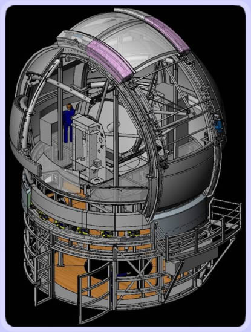

The Automated Planet Finder Telescope

The Automated Planet Finder Telescope is optimized specifically for the Doppler detection of planets having masses 5 to 20 times that of Earth. Such planets would likely be rocky with atmospheres, and able to retain water. The 2.4-meter, robotic, telescope will be dedicated every night to this planet search. In addition the telescope will carry out Doppler reconnaissance to find planets around target stars of NASA's Space Interferometry Mission and for NASA's Terrestrial Planet Finder mission.
The Rocky Planet Finder has been optimized for high efficiency by keeping the secondary obscuration small, and using protected silver coatings on the secondary and tertiary mirrors. The optical train includes an atmospheric dispersion compensator (to stabilize the image centroid against variable dispersion caused by changing zenith distance) and an Iodine cell precision radial velocity reference. The telescope is of the satellite-tracking variety, with tightly spec'd control loops on the guider/drive system, further stabilizing the seeing disk at the entrance slit of the spectrometer. Guiding is done directly on a fraction of the on-axis image, eliminating variations in the guiding due to wander of the seeing disk in the slit, and/or uneven vignetting from the slit jaws.
The telescope is currently under construction. Funding is partially in place. Currently, funds are being sought for the completion of this first-ever dedicated search for terrestrial planets around other stars. We expect first light for the Rocky Planet Finder Telescope in September 2006.